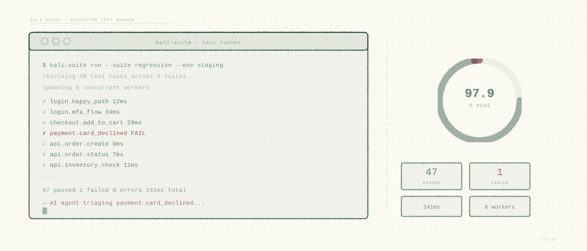
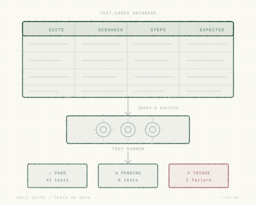
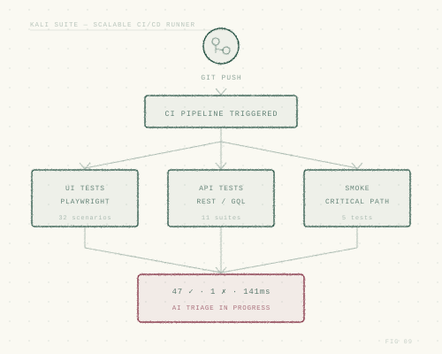
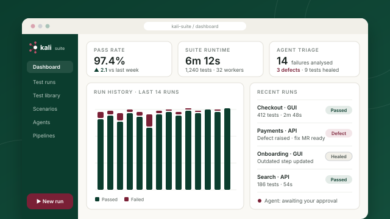

Kali Suite · Software Test Automation
Kali Suite: a database-driven alternative to BDD and Selenium.
Kali Suite is GUI and API test automation where tests live as structured data, run concurrently at scale, and are looked after by AI agents that triage regressions, raise defects and propose fixes, with your approval at every step that changes code.

Why database-driven
Tests as data, not glue code.
Traditional BDD and Selenium frameworks spread tests across feature files, step definitions and page objects. Kali Suite stores them as structured, queryable records, which makes them easier to author, maintain, and hand to an agent.
| Traditional BDD / Selenium | Kali Suite | |
|---|---|---|
| Where tests live | Feature files, step definitions and code in the repository | Structured records in a database: cases, scenarios, prerequisites, steps and validations |
| Authoring | Engineers write and maintain step-definition glue | Add and edit tests from a UI, with no glue code to keep in sync |
| Engine | Selenium WebDriver, often with a separate API tool | Playwright for GUI, plus built-in API testing |
| Execution | Sequential runs or a grid to maintain | A scalable runner service that executes tests concurrently |
| Failure triage | Manual investigation of every red build | AI agents analyse, correlate with Jira, raise defects and propose fixes |
| Reporting | Static report per run | Dashboard with historical runs, outcomes and trends |
Kali regression agents
From red build to root cause, automatically.
When a test fails, agents do the first round of investigation that usually eats an engineer’s morning, then take the right next step.
Catch
Detect a regression as soon as a run completes, in CI or on demand.
Analyse
Examine logs, screenshots, traces and recent changes to find the likely cause.
Correlate
Find the Jira issue behind the change that introduced the regression.
Decide
Classify the failure as a genuine product defect or an outdated test.
Raise it, and propose the fix
- Create a new Jira defect with the evidence attached
- Propose a code fix for review
- Once you approve, open the fix merge request
Update the test
- Detect that the application changed intentionally
- Update the test definition in the database
- Re-run to confirm, with the change logged for review
● Humans stay in control: no code change is submitted without explicit approval.

Tests as data
Every test, structured and searchable.
Test cases, scenarios, prerequisites, steps and validations are stored in a database, so tests can be reused, queried, versioned and maintained without wading through code.
- GUI tests on Playwright. Modern, reliable browser automation across engines.
- API tests alongside. One suite for the interface and the services behind it.
- Reusable building blocks. Shared prerequisites and steps across scenarios.

Scalable runner
Fast feedback, at any scale.
The test runner is a highly scalable service that executes tests concurrently. Add it as a stage in your existing CI/CD pipelines to give developers feedback while the change is still fresh.
- Concurrent execution. Scale out to shorten suite runtime.
- Pipeline-native. Drops into your existing CI/CD as another stage.
- Run what matters. Target suites, tags or individual tests per pipeline.

UI & dashboard
One place for the whole team.
The Kali Suite web interface is built for testers, developers and managers alike, with no command line required.
- Start runs. Select tests or suites and launch them on demand.
- Author tests. Add and edit tests directly through the UI.
- Track history. Dashboard of historical runs, outcomes and trends.
What we measure
Quality you can put a number on.
We baseline your current test process and report improvement against it.
Time to feedback
How long from commit to a trustworthy test result.
Time to triage
How long from a failure to a known cause and an owner.
Flaky and outdated tests
The share of failures that are test problems, not product problems.
Defects caught before release
Regressions stopped in the pipeline rather than found by users.
Spend less time on red builds.
See how Kali Suite and its AI regression agents fit into your pipeline.